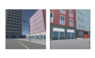

Laser: Latent Set Representations for 3D Generative Modeling
Abstract
NeRF provides unparalleled fidelity of novel view synthesis—rendering a 3D scene from an arbitrary viewpoint. NeRF requires training on a large number of views that fully cover a scene, which limits its applicability. While these issues can be addressed by learning a prior over scenes in various forms, previous approaches have been either applied to overly simple scenes or struggling to render unobserved parts. We introduce Laser-NV—a generative model which achieves high modelling capacity, and which is based on a set-valued latent representation modelled by normalizing flows. Similarly to previous amortized approaches, Laser-NV learns structure from multiple scenes and is capable of fast, feed-forward inference from few views. To encourage higher rendering fidelity and consistency with observed views, Laser-NV further incorporates a geometry-informed attention mechanism over the observed views. Laser-NV further produces diverse and plausible completions of occluded parts of a scene while remaining consistent with observations. Laser-NV shows state-of-the-art novel-view synthesis quality when evaluated on ShapeNet and on a novel simulated City dataset, which features high uncertainty in the unobserved regions of the scene.

NeRF-VAE with Latent Set Representation (Laser-NV) is a generative model over 3D scenes. It can sample new scenes from the prior, or complete existing scenes based on sparse observations.
The latent set representation of a 3D scene is modelled by a permutation-invariant normalizing flow based on Transformers. Laser-NV's decoder is based on NeRF, but uses cross-attention to attend to the latent set as well as local features reprojected from available observations.
Scene Completion
Laser-NV can complete a scene from partial observations. Rendering a novel viewpoint (red) may require inpainting unobsered parts of the scene (gray) based on the latent representation. Inpainting needs to be consistent with observed views. This is accomplished by reprojecting local features from the observed views (green arrows).
Diverse Outputs
As a stochastic generative model, Laser-NV can sample diverse solutions compatible
with the observed context. In the middle we see three ShapeNet chairs, each with a different
backrest, but all compatible with the context. Compare that to a single solution of a
deterministic baseline on the right.
-

- →
Similarly, Laser-NV can inpaint missing parts of the
scene in many different ways. Here we show 4 prior samples (right) conditioned
on the same two observations (left). The observed parts of the scene are consistent
with the observations, but the unobserved parts are different. To make these
visualisations we trained the model on a dataset containing birds-eye views of
the City.
Conditional Generation Examples
Citation
@article{lasernv2022, title={{Laser: Latent Set Representations for 3D Generative Modeling}}, author={Pol Moreno and Adam R. Kosiorek and Heiko Strathmann and Daniel Zoran and Rosalia G. Schneider and Björn Winckler and Larisa Markeeva and Th{\'e}ophane Weber and Danilo J. Rezende}, journal={{arXiv}}, year={2022}, url={https://laser-nv-paper.github.io/}, }
Acknowledgements
This website is based on https://srt-paper.github.io. We thank the authors for the template and for the model fig inspiration.